This post looks back at the development of ctune, lessons learned along the way and possible functionalities that could be implemented in the future.
Github Repository
Foreword
When jumping into new things there is one truism; you don't know until you do. This project exemplified that for me as not only did I not know C to start with, but the vast majority of the functionalities were alien too. The only exception was perhaps logging and file IO. But, if you want to learn more you can't get too comfortable...
From this project I gained an appreciation of the pros and cons of the C language as well as a deeper appreciation for many things taken for granted in modern development (frameworks and libraries aplenty) from having to implement a fair amount of said things from scratch.
Thoughts and impressions
C++ to C
I came into this project having already built a few projects in C++ (11+) and have gotten comfortable with it. Well, as much as one can with a everything including the kitchen sink language that gives the programmer a near endless list of how to approach a problem (for better or for worst - let's be honest here).
C++ essentially makes zero attempts at stopping you writing horrendous and unsafe code but gives you the tools to not do so. It assumes that you know what you are doing, which is great, but it does come at the cost of a near endless supply of foot-guns. Unless you are very diligent in keeping to a well defined subset of the language and are consistent in your approach throughout a project, it can become an absolute cluster-fuck very quickly.
To me, C is like being dropped in a pit of raw materials along with a tiny toolbox. Everything that I took for granted in higher level languages is now either non-existent or incredibly basic. Most things end up having to be implemented from scratch (good for learning, bad for time management) and everything needs to be manually managed to its nth degree (memory leaks ahoy!).
What was missed:
real scoped enums
actual namespaces
templates (this one is a bit controversial but for creating ADTs and ADSs it's pretty handy!),
No Standard Template Library
RAII (manually freeing heap allocated stuff gets old pretty quickly!)
Adapting to C
In order to go around the new-found limitations some compromises had to be made.
Since there are no templates, void pointers (shudders...) were used which were then cast into the expected type. Not the greatest thing to do admittedly since any pretence of type safety goes out the window and void * is not exactly descriptive in a method signature.
No 'RAII' auto-cleaning of resources so everything allocated on the heap had to be manually freed. Valgrind was used regularly to find memory leaks so that they could be dealt with wherever possible... Some could not be fully plugged especially in the case of ncurses (it's normal and documented). In any case any that ate up memory over time were plugged. The rest get cleaned up by the kernel when the application terminates anyway so it is less of a critical issue.
Error control became an item of concern rapidly as methods were becoming littered with resource cleaning code based on where possible error states were detected. This makes the entire thing a hell of a lot less readable and, thus, maintainable. So GOTOs, which are mostly considered evil (?!), were used as a conditional jump statement to the end of the method where all the cleaning up of previously allocated resources and appropriate return could be made. Doing this actually makes the happy path code a little clearer and more condensed.
Namespaces were emulated by aggregating the namespaces into the method and struct names. E.g.: ctune_UI_Dialog. I didn't particularly enjoy doing it this way but as it was the only method I could come up that distinctly indicated where a struct/method could be found within the source hierarchy...
Libraries
Having had rocky experiences with Windows dependencies in the past has made me generally cautious in using anything 3rd party in code even if, when I switched to Linux, it made all these problems go away for the most part.
The biggest issues when dealing with 3rd parties really come down to documentation. These are my 6 identified categories:
Awesome: everything is there; up-to-date API, explanations, model diagrams, common examples. It aims to not waste anytime to get the reader completely clued-in.
Old school: this mostly applies to those POSIX compliant libraries made last century with a battle-tested and very long track record. The API documentation usually covers all functionalities well but the way it's written assumes prior understanding of the internal model used which may not always be present in the reader. It's still pretty good and should be the absolute bare minimum to aim for really in my opinion.
Out-of-date: when someone forgot to regenerate the documentations with the latest changes (Doxygen) or the model changed in the code but the docs were not updated to reflect this. Can easily overlap with the 'Crap' category.
Crap: usually the result of an un-intuitive API, ambiguous method names along with a "code-is-documentation" approach.
Sparse: incomplete or un-comprehensive documentation which will require significant time nearly the same amount of time as if there were no documentation available.
Absent: By default the only way to even get clued in, aside from trying out stuff randomly until it gels, is to either scour the inter-web for that elusive up-to-date tutorial blog article or minimal code posted on a archived forum post.
Thankfully, the libraries used in cTune mostly fell on the "Old school" category but I still had to go find some more comprehensive examples and explanation as everything audio-related in the development was pretty new to me. More diagrams are always appreciated though.
As there were quite a few things that were bran new to me for this project it took a little longer than expected. Learning and figuring out things can be a bit of a time sink but worth it in the end as concepts can carry over other projects even if the language is different. For example, I had already in the past made a couple of logger engines, albeit single threaded, and that help speed things along when it was time to design and make cTune's logger library.
After having built a few projects there is some knowledge beyond a language or framework that carries over well from one project to the next:
Good CS fundamentals (basic datastructures and the like)
Having a structured approach to new topics
Being able to take a problem space and break it down into well defined components,
Ability to recognise the same patterns under different circumstances,
Translating real-world requirements into usable APIs and systems,
And of course, sharp web-searching skills.
Everything else is just a question of getting to grips with the tool-of-the-moment (C, Java, JS, or whatever language/framework is hot shit atm) and, more importantly, knowing which may serve the end goal of the project best. Obviously, for the latter, the more you know the better informed that decision will be. - If all you know is a ${HAMMER}, everything looks like a ${NAIL}. as the adage goes...
I've been meaning to do something with ncurses but never got round to it until now. Although painful, implementing UI widgets from scratch was a enlightening experience and pretty fun once the ScrollBar worked in particular. Emulating an interactive keyboard-driven GUI in a text environment is a interesting challenge.
The plugin system was particularly compelling not only on a conceptual level but also implementation-wise. Being able to dynamically load library object files and execute the code therein opens up a whole new realm of possibilities. 10/10 Would do it again!
The most challenging aspect was getting ffmpeg and a sound server to play well together and get some sound out of the speakers without it being garbled. That required a lot of comprehensive reading on the how and what of PCM data, formats, codecs, AV streams and their working relationships. It's no small topic but it is a central feature in cTune so it had to be done.
Developing a complete application is a lot of work and not always sunshine and candy. But getting to that moment near the end where all the different parts start to come together and work as intended per the original plan is incredibly gratifying.
The end result doesn't look too bad and, for what it is, does its job well.
Debugging for C is similar to C++ so GDB and CLion's nice and intuitive debugging interface was a highlight during development. Nearly all the debugging was for 3 classes of bugs:
Pointers
Bad pointers due to forgetting to initialise to NULL or resetting them after a free(..) operation,
Memory leaks mostly due to forgetfulness in freeing resources (mea culpa!),
Off by 1 errors - mostly occurring with char * array access,
strlen(..) based - not always because of a direct call but an indirect one done by some other C function (like snprintf).
One annoyance that drove me to finally learn how to deal with coredumps was that CLion's "debug" didn't work once ncurses was included. When running debug the ncurses window cannot output to CLion's embedded terminal.
Choose the appropriate Debugger, for example "Bundled GDB". The Core Dump field should point to the decompressed core-dump file and the Symbol File should point to the compiled binary used when the crash happened (preferably a 'debug' version). Then it's just a matter of running the Core-Dump configuration which will use the CLion debugger interface.
Ideas for future versions
These are mostly ideas for "nice to have" features that came up during and after development. Whether they ever get implemented is another question altogether but it opens up possible expansion paths for future versions of the application.
Minor
Single session-ing
Deal with the event where another instance of cTune is already running. Possible handling could be to just print a message and abort the new instance or force kill previous instance. A command line argument could be added to force kill any other running session.
Favourites rolling backups
Backing up of previous bookmarked favourites in case the current session corrupts ctune.fav.
Major
Playlists tab
Wireframe.1 Playlists tab
A complete new tab where playlists can be loaded and edited from '.csv files (see wireframe.1). A file browser dialog would need to be created to load these files into cTune. A pane-context based option menu would also be a good idea for the playlist and its item list to add/edit/remove/save changes.
Playlog viewer tab
A simple tab that just buffers and shows the same info as in the play-log (could behave like tail).
Settings viewer dialog
A dialog to view the currently used operator editable settings from the ctune.cfg file and indication on changed settings made during the running session (e.g.: the bookmarked favourites' ordering).

{kind=link}
{kind=link}
{kind=link}
{kind=link}
After having built a few projects there is some knowledge beyond a language or framework that carries over well from one project to the next:
Everything else is just a question of getting to grips with the tool-of-the-moment (C, Java, JS, or whatever language/framework is hot shit atm) and, more importantly, knowing which may serve the end goal of the project best. Obviously, for the latter, the more you know the better informed that decision will be. - as the adage goes...